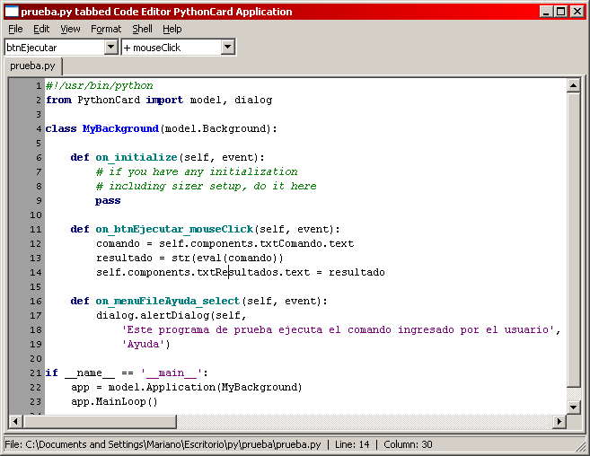

Introducción
PythonCard es un conjunto de herramientas de construcción GUI para crear aplicaciones de escritorio multiplataforma en Windows, Mac OS X, y Linux, usando Python.
La motivación de PythonCard es "Las cosas simples deberían ser simples, y las complejas deberían ser posibles"
PythonCard es para vos si queres desarrollar aplicaciones gráficas de manera rápida y fácil con un mínimo esfuerzo y código. Es parecido a Visual Basic Clásico, con respecto a la creación visual de interfaces gráficas y programación por eventos.
PythonCard usa wxPython. Si estás familiarizado con wxPython, se puede ver a PythonCard como una manera simple de hacer programas wxPython con un gran conjunto de ejemplos y herramientas que se pueden copiar y mejorar para crear aplicaciones multiplataforma.
Cómo instalar PythonCard:
Linux (Debian y derivados)
Pythoncard esta soportado en Etch, así que su instalación es bastante simple.
Windows
Bajar e instalar Python desde www.python.org, Downloads, Windows Installer Python 2.5.2.
Bajar e instalar wxPython desde wxPython.org, Binaries, win32 unicode.
Bajar e instalar PythonCard pythoncard.sourceforge.net, Downloads, PythonCard 0.8.2 win32.
Ejemplos
Si todo se instaló correctamente, podemos probar los ejemplos que vienen con PythonCard, menú Inicio, PythonCard, Sample Launcher (o buscar el script en C:Python25Libsite-packagesPythonCardsamplessamples.pyw o similar para la plataforma en que estemos). Debería aparecer la pantalla de ejemplos (ver sitio de PythonCard). En ella se puede encontrar los programas de ejemplos en las siguientes categorías:
Bases de datos (altas, bajas, modificaciones y consultas): addresses, companies, custdb, dbBrowser, flatfileDatabase, gadflyDatabase
Juegos: tictactoe (ta-te-ti), turtle (tortuga = lenguaje logo), life (juego de la vida), reversi, sodoku
Gráficos: doodle (mano alzada), spirograph (espirografía), lsystem (fractales Lindenmayer), hopalong (fractales)
Demostración del entorno: proof, dialogs, minimal, minimalStandalone, noresource, pictureViewer, saveClipboardBitmap, simpleBrowser, simpleIEBrowser, samples, widgets
Internet: chat, jabberChat, pysshed, radioclient, SourceForgeTracker, searchexplorer, stockprice, textRouter, webgrabber, webserver
Utilitarios: conversions (ºC a ºF), redemo (expresiones regulares), rpn (calculadora de impuestos)
Varios: mp3player, slideshow (presentaciones html), sounds (sonidos wab), textIndexer, worldclock
Si algo anda mal y no se muestra la pantalla de ejemplos, podemos probar lo siguiente para ver que esta fallando en una consola Python:
import wx wx.version() # debería imprimir '2.8.7.1 (msw-unicode)' o similar from PythonCard import model rsrc = {'application':{'type':'Application', 'name':'Minimal', 'backgrounds': [{'type':'Background','name':'bgMin', 'title':'Prueba','size':(200, 100),'components': []}]} } model.Application(model.Background, None, rsrc).MainLoop()
Debería aparecer una ventanita con título "Prueba".
Además, PythonCard dispone de características de depuración (depurar menú, loggeo, visor de mensajes, visor del espacio nombres, editor de propiedades, shell). Estas opciones se pueden activar al ejecutar los ejemplos para ver cómo funcionan.
Editor de Pantallas
PythonCard viene con un editor de pantallas (resource/layout editor), se encuentra en el menu Inicio, PythonCard, Layout Editor (o buscar el script en C:Python25Libsite-packagesPythonCardtoolsresourceEditorlayoutEditor.py o similar para la plataforma en que estemos). Debería aparecer la pantalla de edición (ver imágenes y más información en sitio de PythonCard):
Ejemplo de cómo crear una aplicación de prueba (que tome una expresión/comando python ingresado por el usuario y devuelva su resultado):
Ir al menú File, New, aparece un miniasistente para crear la aplicación
Seleccionar "Standard Template with File/Exit Menu" (Plantilla estandard con menú File/Exit)
Ingresar el nombre y ubicación de la aplicación, ej "Prueba" en el escritorio o carpeta personal.
-
Se Generará los siguientes archivos:
prueba.py: programa python que contendrá el comportamiento a los eventos y demás funcionalidadesprueba.rsrc.py: archivo python que define la interfaz gráfica
-
Agregamos los componentes (ver el diseño de pantalla en la última sección):
Etiqueta: menú Component, Static Text (la seleccionamos y en la pantalla de propiedades cambiamos el Label: Comando)
Campo de Texto: menú Component, Text Field (la seleccionamos y movemos a continuación de la etiqueta, en las propiedades marcar Vary, cambiar Name: txtComando y Text: en blanco )
Área de Texto: menú Component, Text Area (lo seleccionamos, movemos a donde corresponda, en las propiedades marcar Vary, escribir en Name: txtResultados y en Text: en blanco)
Botón: menú Component, Button (lo seleccionamos, movemos a donde corresponda, en las propiedades marcar Vary, escribir en Name: btnEjecutar y en Label: Ejecutar )
-
Agregamos un menú de ayuda:
-
Ir al menú Edit, Menu Editor:
Marcar File, presionar New Menu Item, y escribir en Label: Ayuda
Presionar Ok para aceptar
-
Probamos que quede bien, yendo al menú File, Run (obviamente no va a hacer nada más que aparecer en la pantalla, sin ningún comportamiento)
Grabamos con el menú File, Save
Editor de Código
PythonCard viene tambien con un editor de código, se encuentra en el menú Inicio, PythonCard, Code Editor (o buscar el script en C:Python25Libsite-packagesPythonCardtoolsresourceEditorcodeEditor.py o similar para la plataforma en que estemos). También esta el Tabbed Code Editor que nos permite editar múltiples archivos y seleccionar los componentes y sus eventos. Debería aparecer la pantalla de edición de código (ver imágenes y más información en sitio de PythonCard):
Continuando con el ejemplo de como crear una aplicación de prueba (ver sección anterior):
Ir al menú File, Open, abrir el archivo
prueba.pygenerado anteriormente-
Aparecerá el script genérico (plantilla) creado en la sección anterior, al que le falta agregar el comportamiento frente a los eventos (ver el código completo al final):
Agregar
from PythonCard import dialogpara poder utilizar los dialogosAgregar el método on_btnEjecutar_mouseClick (evento click del mouse sobre el botón Ejecutar)
Agregar el método on_menuFileAyuda_select (evento selección del menú File | Ayuda)
Para probar el código, ir al menú File, Run, debería aparecer la aplicación funcionando
De no funcionar, se pueden cambiar las opciones de depuración en el menú File, Run Options o ejecutar con el interprete con la opción Run with interpreter
Código completo final del ejemplo:
from PythonCard import model from PythonCard import dialog class MyBackground(model.Background): def on_initialize(self, event): # if you have any initialization # including sizer setup, do it here pass def on_btnEjecutar_mouseClick(self, event): comando = self.components.txtComando.text resultado = str(eval(comando)) self.components.txtResultados.text = resultado def on_menuFileAyuda_select(self, event): dialog.alertDialog(self, 'Este programa de prueba ejecuta el comando ingresado por el usuario', 'Ayuda') if __name__ == '__main__': app = model.Application(MyBackground) app.MainLoop()
Nota: Por ser un ejemplo se obviaron temas de manejo de excepciones y cuestiones avanzadas. Se pueden descargar los archivos terminados: